Supplementary Information (All models)
1. Component Views
Note
- Shock absorber (2WD high ride suspension) (4WD)
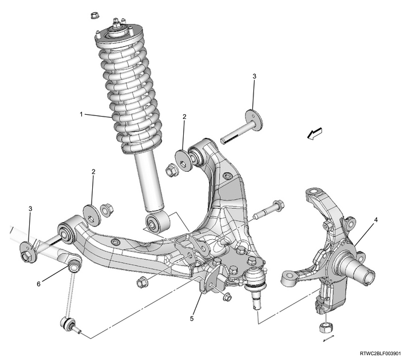
- Shock absorber assembly
- Cam plate
- Cam bolt
- Knuckle
- Lower control arm
- Stabilizer link
Note
- Coil spring (2WD high ride suspension) (4WD)
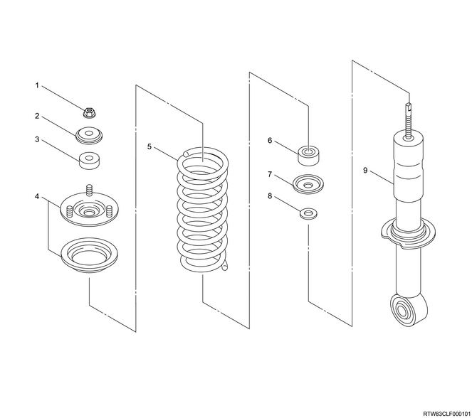
- Nut
- Washer
- Rubber bushing
- Front mount bracket
- Coil spring
- Rubber bushing
- Washer
- Washer
- Shock absorber
Note
- Stabilizer bar (2WD high ride suspension) (4WD)
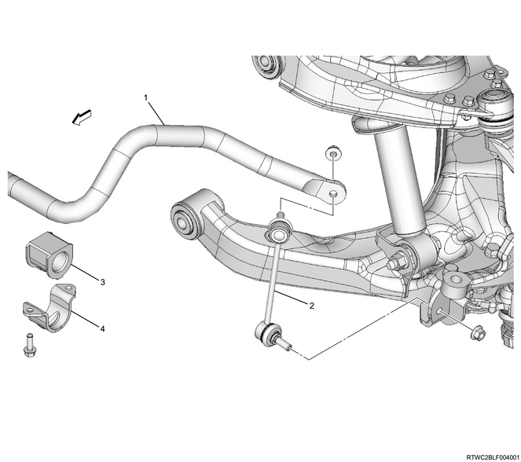
- Stabilizer bar
- Stabilizer link
- Rubber bushing
- Clamp
Note
- Knuckle (2WD high ride suspension) (4WD)
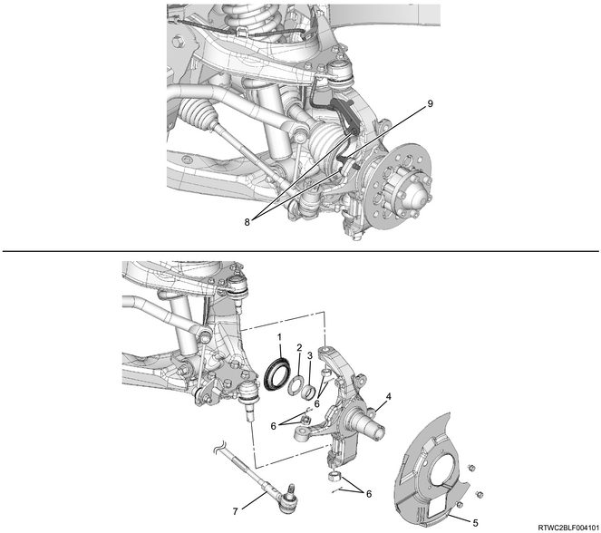
- Oil seal, 4WD
- Thrust washer, 4WD
- Needle bearing, 4WD
- Knuckle
- Dust cover
- Nut, cotter pin
- Tie rod end
- Bolt
- Front wheel speed sensor
Note
- Upper control arm (2WD high ride suspension) (4WD)
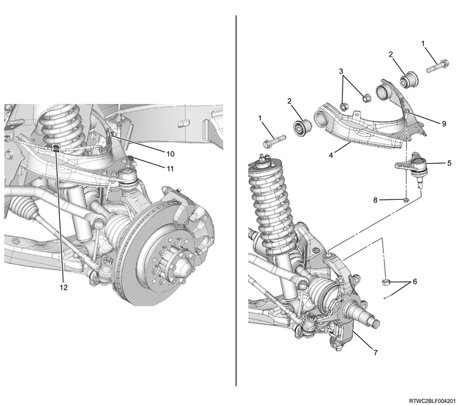
- Upper control arm, bolt
- Bushing
- Upper control arm, nut
- Upper control arm
- Upper ball joint
- Nut, cotter pin
- Knuckle
- Upper ball joint, nut
- Upper ball joint, bolt
- Front wheel speed sensor, nut
- Brake hose, nut
- Front wheel speed sensor, clip
Note
- Lower control arm (2WD high ride suspension) (4WD)
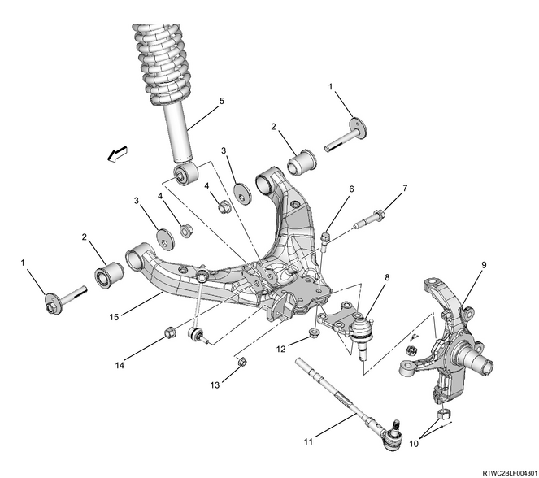
- Cam bolt
- Bushing
- Cam plate
- Lower control arm, nut
- Shock absorber
- Lower ball joint, bolt
- Shock absorber, bolt
- Lower ball joint
- Knuckle
- Nut, cotter pin
- Tie rod end
- Lower ball joint, nut
- Stabilizer link, nut
- Shock absorber, nut
- Lower control arm
Note
- Upper ball joint (2WD high ride suspension) (4WD)
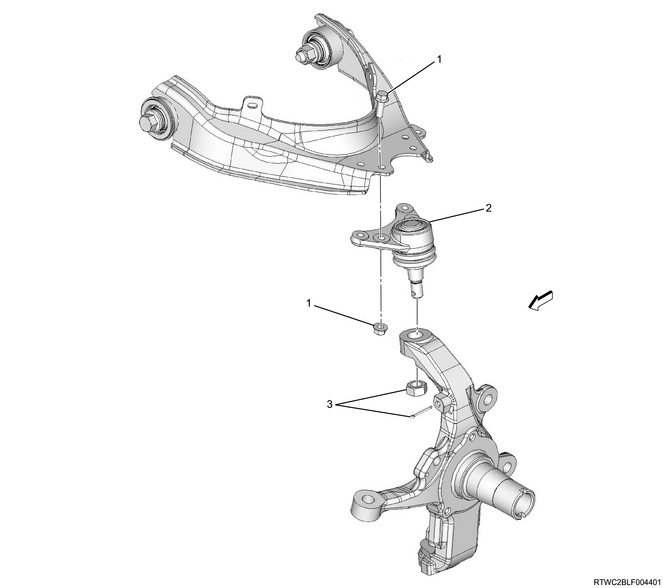
- Bolt, nut
- Upper ball joint
- Nut, cotter pin
Note
- Lower ball joint (2WD high ride suspension) (4WD)
- Lower ball joint, bolt
- Knuckle
- Nut, cotter pin
- Lower ball joint
- Lower ball joint, nut
Note
- Bumper rubber (2WD high ride suspension) (4WD)
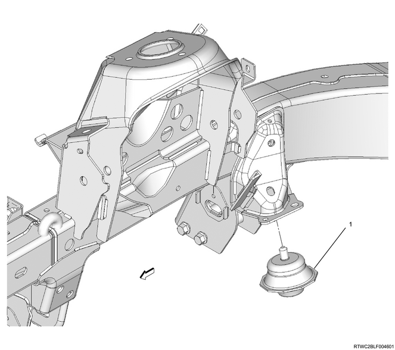
- Bumper rubber
2. Tightening Torque Views
Note
- Shock absorber (2WD high ride suspension) (4WD)
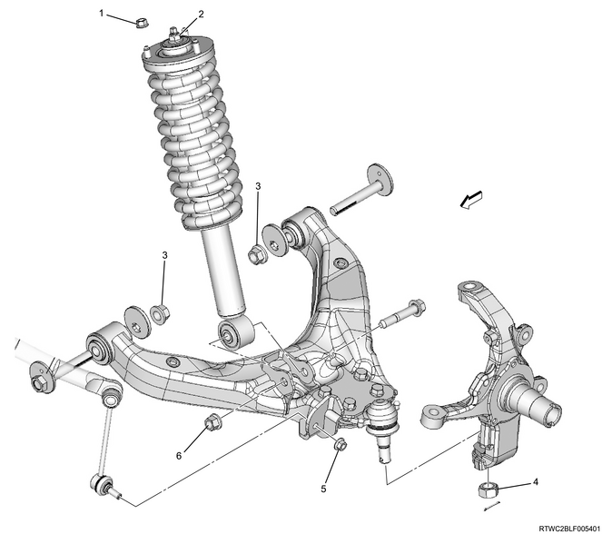
1： 55 N・m { 5.6 kgf・m / 41 lb・ft }
2： 25 N・m { 2.5 kgf・m / 18 lb・ft }
3： 186 N・m { 19.0 kgf・m / 137 lb・ft }
4： 147 N・m { 15.0 kgf・m / 108 lb・ft }
5： 64 N・m { 6.5 kgf・m / 47 lb・ft }
6： 152 N・m { 15.5 kgf・m / 112 lb・ft }
Note
- Stabilizer bar (2WD high ride suspension) (4WD)
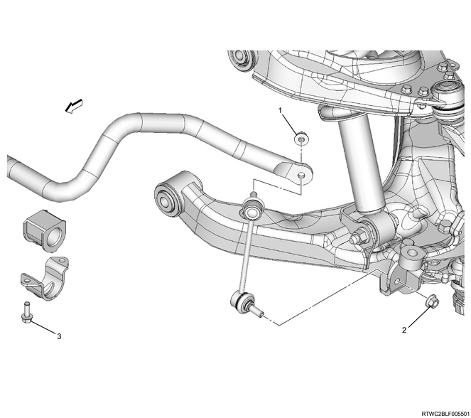
1： 64 N・m { 6.5 kgf・m / 47 lb・ft }
2： 64 N・m { 6.5 kgf・m / 47 lb・ft }
3： 28 N・m { 2.9 kgf・m / 21 lb・ft }
Note
- Knuckle (2WD high ride suspension) (4WD)

1： 8 N・m { 0.8 kgf・m / 71 lb・in }
2： 98 N・m { 10.0 kgf・m / 72 lb・ft }
3： 147 N・m { 15.0 kgf・m / 108 lb・ft }
4： 98 N・m { 10.0 kgf・m / 72 lb・ft }
Note
- Upper control arm (2WD high ride suspension) (4WD)
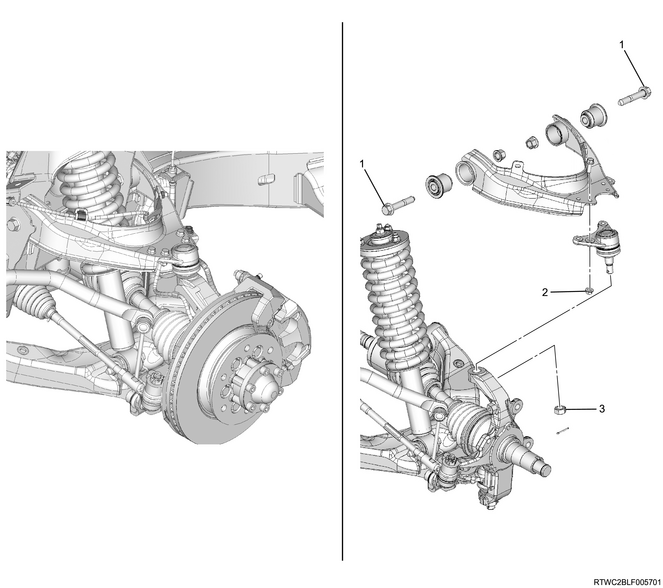
1： 137 N・m { 14.0 kgf・m / 101 lb・ft }
2： 31 N・m { 3.2 kgf・m / 23 lb・ft }
3： 98 N・m { 10.0 kgf・m / 72 lb・ft }
Note
- Lower control arm (2WD high ride suspension) (4WD)
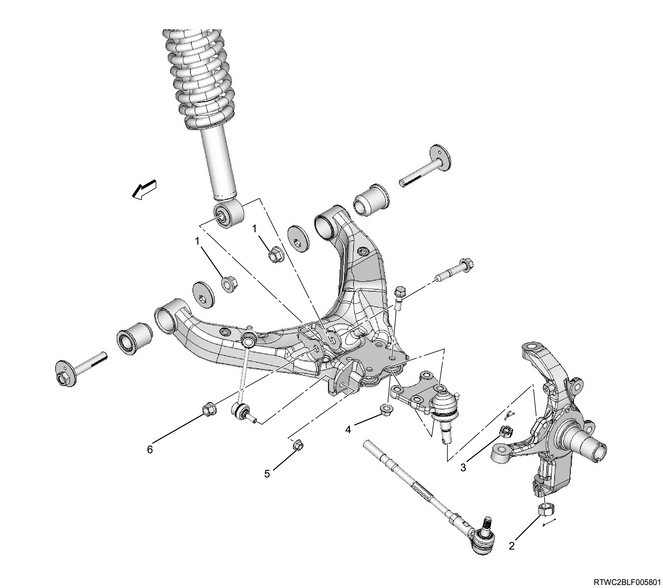
1： 186 N・m { 19.0 kgf・m / 137 lb・ft }
2： 147 N・m { 15.0 kgf・m / 108 lb・ft }
3： 98 N・m { 10.0 kgf・m / 72 lb・ft }
4： 127 N・m { 13.0 kgf・m / 94 lb・ft }
5： 64 N・m { 6.5 kgf・m / 47 lb・ft }
6： 152 N・m { 15.5 kgf・m / 112 lb・ft }
Note
- Upper ball joint (2WD high ride suspension) (4WD)
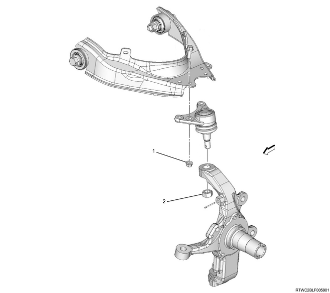
1： 31 N・m { 3.2 kgf・m / 23 lb・ft }
2： 98 N・m { 10.0 kgf・m / 72 lb・ft }
Note
- Lower ball joint (2WD high ride suspension) (4WD)
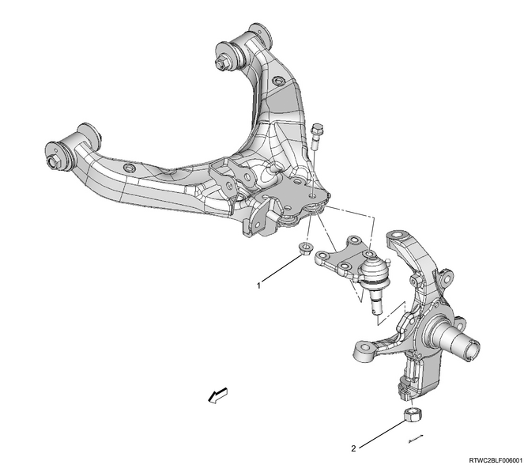
1： 127 N・m { 13.0 kgf・m / 94 lb・ft }
2： 147 N・m { 15.0 kgf・m / 108 lb・ft }
Note
- Bumper rubber (2WD high ride suspension) (4WD)
1： 106 N・m { 10.8 kgf・m / 78 lb・ft }